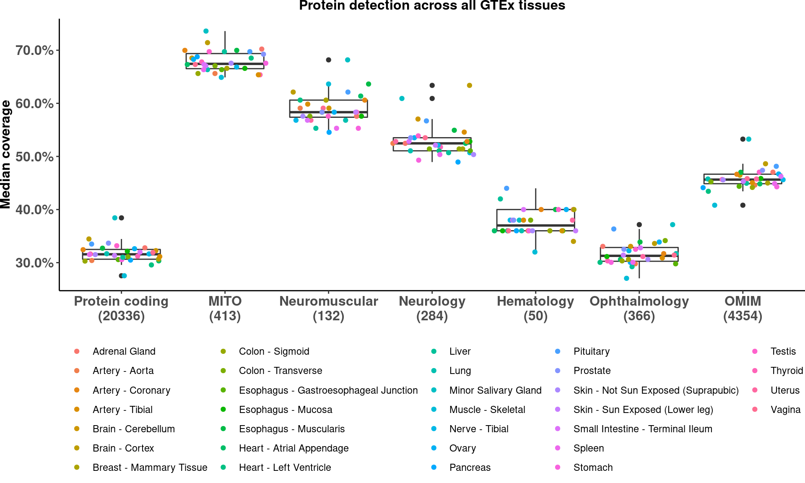

# load config
source(snakemake@input$config)
# Load disease genes table
# dis_genes <- fread('/s/project/mitoMultiOmics/multiOMICs_integration/datasets/disease_genes.tsv')
dis_genes <- fread(snakemake@input$disease_genes)
# Get all protein coding genes
# genecode_v29 <- fread('/s/project/mitoMultiOmics/multiOMICs_integration/datasets/gene_annotation_v29.tsv')
genecode_v29 <- fread(snakemake@input$gencode_annotation)
genecode_v29[, geneID := toupper(gene_name_unique)]
protein_coding <- genecode_v29[gene_type == 'protein_coding']
protein_coding[, DISEASE := 'Protein coding']
protein_coding <- protein_coding[geneID != "" & !is.na(geneID) , c("geneID", "DISEASE")]
protein_coding <- protein_coding[!duplicated(protein_coding)]
protein_coding[, total := .N]
protein_coding[, ORIGIN := 'genecode v29']
# Combine
dis_genes <- rbind( dis_genes, protein_coding)
dis_genes[ , geneID := toupper(geneID)]
dis_genes <- dis_genes[!duplicated(dis_genes)]
rm(protein_coding)
####################################################################
# Download data
# download.file(destfile= paste0("/s/project/mitoMultiOmics/multiOMICs_integration/datasets", "/Table_S1_gene_info_at_protein_level.xlsx" ), url= 'https://storage.googleapis.com/gtex_egtex/proteomics/Table_S1_gene_info_at_protein_level.xlsx')
download.file(destfile= paste0(snakemake@input$datasets, "/Table_S1_gene_info_at_protein_level.xlsx" ), url= 'https://storage.googleapis.com/gtex_egtex/proteomics/Table_S1_gene_info_at_protein_level.xlsx')
# Load GTEx annotation
# sa_gtex <- read_excel(paste0("/s/project/mitoMultiOmics/multiOMICs_integration/datasets", "/Table_S1_gene_info_at_protein_level.xlsx" ), sheet = 2) %>% as.data.table()
sa_gtex <- read_excel(paste0(snakemake@input$datasets, "/Table_S1_gene_info_at_protein_level.xlsx" ), sheet = 2) %>% as.data.table()
sa_gtex[, proteome_ID:= paste0("Run", Run, "_Tag", Tag)]
# Load GTEx proteomics data
# gtex <- read_excel(paste0("/s/project/mitoMultiOmics/multiOMICs_integration/datasets", "/Table_S1_gene_info_at_protein_level.xlsx" ), sheet = 6)
gtex <- read_excel(paste0(snakemake@input$datasets, "/Table_S1_gene_info_at_protein_level.xlsx" ), sheet = 6)
gtex <- gtex[-c(1, 2), -1]
colnames(gtex)[1] <- "gene_id"
gtex <- merge(genecode_v29[, c("geneID", "gene_id")], gtex, by= "gene_id" )
gtex$gene_id <- NULL
# Convert to numeric
gtex <- cbind(gtex[, 1], sapply(gtex[ , 2 : ncol(gtex)], function(x) {as.numeric(x) }) )
gtex[is.na(gtex)] <- 0
gtex <- rowsum(gtex[,2:ncol(gtex)], gtex$geneID)
gtex <- gtex[!duplicated(gtex), ]
sa_gtex <- sa_gtex[ proteome_ID %in% colnames(gtex)]
##########################################
gtex_all <- data.frame()
for (tissue in unique(sa_gtex[Sample != "reference"]$Sample)){
tissue_samples <- sa_gtex[Sample == tissue ]$proteome_ID
expr <- gtex[ , tissue_samples]
expr$geneID <- rownames(expr)
expr_p = melt(expr, id.vars=c("geneID")) %>% as.data.table()
expr_p <- expr_p[value > 0 , .N, by = "geneID"]
expr_p[, half := N >= max(N)/2]
expr_p$N <- NULL
dg_expr <- merge(dis_genes, expr_p, by = "geneID")
dg_expr[, TISSUE := tissue]
dg_expr[ half == T, HALF := .N, by = DISEASE ]
dg_expr <- dg_expr[, c("TISSUE", "DISEASE", "total", "HALF" )]
dg_expr <- dg_expr[!duplicated(dg_expr)]
dg_expr <- dg_expr[!is.na(HALF)]
detected_expr <- melt(dg_expr, id.vars=c("TISSUE", "DISEASE", "total" )) %>% as.data.table()
detected_expr <- detected_expr[!duplicated(detected_expr)]
setnames(detected_expr, c("variable", "value" ), c("DETECTED", "N"))
detected_expr[, prop:= N / total ]
gtex_all <-rbind(gtex_all , detected_expr)
}
gtex_all$dis_n <- paste0(gtex_all$DISEASE, "\n" ,"(",gtex_all$total, ")")
# unique(gtex_all$dis_n)
gtex_all$dis_n <- factor(gtex_all$dis_n, levels = c("Protein coding\n(20336)",
"MITO\n(413)",
"Neuromuscular\n(132)",
"Neurology\n(284)",
"Hematology\n(50)",
"Ophthalmology\n(366)",
"OMIM\n(4354)"))
S_fig2b <- ggplot(gtex_all, aes(dis_n, prop)) +
geom_boxplot( ) + # fill = "#FB9A99"
geom_point( aes(color = TISSUE) , position = "jitter") +
scale_y_continuous( labels=scales::percent) +
scale_fill_brewer() +
labs( y = "Median coverage")+
ggtitle("Protein detection across all GTEx tissues")+
theme_classic()+
theme(legend.position="bottom",
plot.title = element_text(hjust = 0.5, size=12,face="bold"),
axis.title.y = element_text(face="bold", size=12) ,
axis.title.x = element_blank() ,
axis.text.x = element_text(size=12, face="bold") ,
legend.title = element_blank(),
legend.direction = "horizontal",
axis.text.y = element_text(face="bold", size=12, hjust = 0.5),
plot.margin = margin(0, 0, 0, 0, "cm"))
S_fig2b

pdf(snakemake@output$fig, # "/s/project/mitoMultiOmics/multiOMICs_integration/Figures/Supplementary_figures/S_Fig2_b.pdf",
width = 10, height = 6, useDingbats=FALSE )
print(S_fig2b)
dev.off()
## png
## 2
IyctLS0KIycgdGl0bGU6IFN1cHBsZW1lbnRhcnkgRmlndXJlIDJiIGdlbmUgc2V0IGNvdmVyYWdlIGJ5IEdUZVggcHJvdGVvbWljcwojJyBhdXRob3I6IHNtaXJub3ZkCiMnIHdiOgojJyAgaW5wdXQ6IAojJyAgLSBjb25maWc6ICdzcmMvY29uZmlnLlInCiMnICAtIGdlbmNvZGVfYW5ub3RhdGlvbjogJ2BzbSBjb25maWdbIkRBVEFTRVRTIl0gKyAiL2dlbmVfYW5ub3RhdGlvbl92MjkudHN2ImAnCiMnICAtIGRpc2Vhc2VfZ2VuZXM6ICdgc20gY29uZmlnWyJEQVRBU0VUUyJdICsgIi9kaXNlYXNlX2dlbmVzLnRzdiJgJwojJyAgLSBkYXRhc2V0czogJ2BzbSBjb25maWdbIkRBVEFTRVRTIl1gJwojJyAgb3V0cHV0OgojJyAgLSBmaWc6ICdgc20gY29uZmlnWyJGSUdVUkVfRElSIl0gKyAiL1N1cHBsZW1lbnRhcnlfZmlndXJlcy9TX0ZpZzJfYi5wZGYiYCcKIycgb3V0cHV0OiAKIycgICBodG1sX2RvY3VtZW50OgojJyAgICBjb2RlX2ZvbGRpbmc6IGhpZGUKIycgICAgY29kZV9kb3dubG9hZDogVFJVRQojJy0tLQoKIyBsb2FkIGNvbmZpZwpzb3VyY2Uoc25ha2VtYWtlQGlucHV0JGNvbmZpZykKCgojIExvYWQgZGlzZWFzZSBnZW5lcyB0YWJsZQojIGRpc19nZW5lcyA8LSBmcmVhZCgnL3MvcHJvamVjdC9taXRvTXVsdGlPbWljcy9tdWx0aU9NSUNzX2ludGVncmF0aW9uL2RhdGFzZXRzL2Rpc2Vhc2VfZ2VuZXMudHN2JykKZGlzX2dlbmVzIDwtIGZyZWFkKHNuYWtlbWFrZUBpbnB1dCRkaXNlYXNlX2dlbmVzKQoKCgojIEdldCBhbGwgcHJvdGVpbiBjb2RpbmcgZ2VuZXMKIyBnZW5lY29kZV92MjkgPC0gZnJlYWQoJy9zL3Byb2plY3QvbWl0b011bHRpT21pY3MvbXVsdGlPTUlDc19pbnRlZ3JhdGlvbi9kYXRhc2V0cy9nZW5lX2Fubm90YXRpb25fdjI5LnRzdicpCmdlbmVjb2RlX3YyOSA8LSBmcmVhZChzbmFrZW1ha2VAaW5wdXQkZ2VuY29kZV9hbm5vdGF0aW9uKQpnZW5lY29kZV92MjlbLCBnZW5lSUQgOj0gdG91cHBlcihnZW5lX25hbWVfdW5pcXVlKV0KcHJvdGVpbl9jb2RpbmcgPC0gZ2VuZWNvZGVfdjI5W2dlbmVfdHlwZSA9PSAncHJvdGVpbl9jb2RpbmcnXQpwcm90ZWluX2NvZGluZ1ssIERJU0VBU0UgOj0gJ1Byb3RlaW4gY29kaW5nJ10KcHJvdGVpbl9jb2RpbmcgPC0gcHJvdGVpbl9jb2RpbmdbZ2VuZUlEICE9ICIiICYgIWlzLm5hKGdlbmVJRCkgLCBjKCJnZW5lSUQiLCAiRElTRUFTRSIpXQpwcm90ZWluX2NvZGluZyA8LSBwcm90ZWluX2NvZGluZ1shZHVwbGljYXRlZChwcm90ZWluX2NvZGluZyldCnByb3RlaW5fY29kaW5nWywgdG90YWwgOj0gLk5dCnByb3RlaW5fY29kaW5nWywgT1JJR0lOIDo9ICdnZW5lY29kZSB2MjknXQoKIyBDb21iaW5lCmRpc19nZW5lcyA8LSByYmluZCggZGlzX2dlbmVzLCBwcm90ZWluX2NvZGluZykKZGlzX2dlbmVzWyAsIGdlbmVJRCA6PSB0b3VwcGVyKGdlbmVJRCldCmRpc19nZW5lcyA8LSBkaXNfZ2VuZXNbIWR1cGxpY2F0ZWQoZGlzX2dlbmVzKV0KCnJtKHByb3RlaW5fY29kaW5nKQoKCgojIyMjIyMjIyMjIyMjIyMjIyMjIyMjIyMjIyMjIyMjIyMjIyMjIyMjIyMjIyMjIyMjIyMjIyMjIyMjIyMjIyMjIyMjIwoKCiMgRG93bmxvYWQgZGF0YQojIGRvd25sb2FkLmZpbGUoZGVzdGZpbGU9IHBhc3RlMCgiL3MvcHJvamVjdC9taXRvTXVsdGlPbWljcy9tdWx0aU9NSUNzX2ludGVncmF0aW9uL2RhdGFzZXRzIiwgIi9UYWJsZV9TMV9nZW5lX2luZm9fYXRfcHJvdGVpbl9sZXZlbC54bHN4IiApLCB1cmw9ICdodHRwczovL3N0b3JhZ2UuZ29vZ2xlYXBpcy5jb20vZ3RleF9lZ3RleC9wcm90ZW9taWNzL1RhYmxlX1MxX2dlbmVfaW5mb19hdF9wcm90ZWluX2xldmVsLnhsc3gnKQpkb3dubG9hZC5maWxlKGRlc3RmaWxlPSBwYXN0ZTAoc25ha2VtYWtlQGlucHV0JGRhdGFzZXRzLCAiL1RhYmxlX1MxX2dlbmVfaW5mb19hdF9wcm90ZWluX2xldmVsLnhsc3giICksIHVybD0gJ2h0dHBzOi8vc3RvcmFnZS5nb29nbGVhcGlzLmNvbS9ndGV4X2VndGV4L3Byb3Rlb21pY3MvVGFibGVfUzFfZ2VuZV9pbmZvX2F0X3Byb3RlaW5fbGV2ZWwueGxzeCcpCgoKIyBMb2FkIEdURXggYW5ub3RhdGlvbgojIHNhX2d0ZXggPC0gcmVhZF9leGNlbChwYXN0ZTAoIi9zL3Byb2plY3QvbWl0b011bHRpT21pY3MvbXVsdGlPTUlDc19pbnRlZ3JhdGlvbi9kYXRhc2V0cyIsICIvVGFibGVfUzFfZ2VuZV9pbmZvX2F0X3Byb3RlaW5fbGV2ZWwueGxzeCIgKSwgc2hlZXQgPSAyKSAlPiUgYXMuZGF0YS50YWJsZSgpCnNhX2d0ZXggPC0gcmVhZF9leGNlbChwYXN0ZTAoc25ha2VtYWtlQGlucHV0JGRhdGFzZXRzLCAiL1RhYmxlX1MxX2dlbmVfaW5mb19hdF9wcm90ZWluX2xldmVsLnhsc3giICksIHNoZWV0ID0gMikgJT4lIGFzLmRhdGEudGFibGUoKQpzYV9ndGV4WywgcHJvdGVvbWVfSUQ6PSBwYXN0ZTAoIlJ1biIsIFJ1biwgIl9UYWciLCBUYWcpXQoKCiMgTG9hZCBHVEV4IHByb3Rlb21pY3MgZGF0YQojIGd0ZXggPC0gcmVhZF9leGNlbChwYXN0ZTAoIi9zL3Byb2plY3QvbWl0b011bHRpT21pY3MvbXVsdGlPTUlDc19pbnRlZ3JhdGlvbi9kYXRhc2V0cyIsICIvVGFibGVfUzFfZ2VuZV9pbmZvX2F0X3Byb3RlaW5fbGV2ZWwueGxzeCIgKSwgc2hlZXQgPSA2KQpndGV4IDwtIHJlYWRfZXhjZWwocGFzdGUwKHNuYWtlbWFrZUBpbnB1dCRkYXRhc2V0cywgIi9UYWJsZV9TMV9nZW5lX2luZm9fYXRfcHJvdGVpbl9sZXZlbC54bHN4IiApLCBzaGVldCA9IDYpCmd0ZXggPC0gZ3RleFstYygxLCAyKSwgLTFdIApjb2xuYW1lcyhndGV4KVsxXSA8LSAiZ2VuZV9pZCIKZ3RleCA8LSBtZXJnZShnZW5lY29kZV92MjlbLCBjKCJnZW5lSUQiLCAiZ2VuZV9pZCIpXSwgZ3RleCwgYnk9ICJnZW5lX2lkIiApCmd0ZXgkZ2VuZV9pZCA8LSBOVUxMCgojIENvbnZlcnQgdG8gbnVtZXJpYwpndGV4IDwtIGNiaW5kKGd0ZXhbLCAxXSwgc2FwcGx5KGd0ZXhbICwgMiA6IG5jb2woZ3RleCldLCBmdW5jdGlvbih4KSB7YXMubnVtZXJpYyh4KSB9KSApCmd0ZXhbaXMubmEoZ3RleCldIDwtIDAKZ3RleCA8LSByb3dzdW0oZ3RleFssMjpuY29sKGd0ZXgpXSwgZ3RleCRnZW5lSUQpCmd0ZXggPC0gZ3RleFshZHVwbGljYXRlZChndGV4KSwgXQpzYV9ndGV4IDwtIHNhX2d0ZXhbIHByb3Rlb21lX0lEICVpbiUgY29sbmFtZXMoZ3RleCldCgoKCiMjIyMjIyMjIyMjIyMjIyMjIyMjIyMjIyMjIyMjIyMjIyMjIyMjIyMjIwpndGV4X2FsbCA8LSBkYXRhLmZyYW1lKCkKZm9yICh0aXNzdWUgaW4gdW5pcXVlKHNhX2d0ZXhbU2FtcGxlICE9ICJyZWZlcmVuY2UiXSRTYW1wbGUpKXsKICB0aXNzdWVfc2FtcGxlcyA8LSBzYV9ndGV4W1NhbXBsZSA9PSAgdGlzc3VlIF0kcHJvdGVvbWVfSUQKICBleHByIDwtIGd0ZXhbICwgdGlzc3VlX3NhbXBsZXNdCiAgCiAgZXhwciRnZW5lSUQgPC0gIHJvd25hbWVzKGV4cHIpCiAgZXhwcl9wID0gbWVsdChleHByLCBpZC52YXJzPWMoImdlbmVJRCIpKSAlPiUgYXMuZGF0YS50YWJsZSgpCiAgZXhwcl9wIDwtIGV4cHJfcFt2YWx1ZSA+IDAgLCAuTiwgYnkgPSAiZ2VuZUlEIl0KICBleHByX3BbLCBoYWxmIDo9ICBOID49IG1heChOKS8yXQogIGV4cHJfcCROIDwtIE5VTEwKICAKCiAgZGdfZXhwciA8LSBtZXJnZShkaXNfZ2VuZXMsIGV4cHJfcCwgYnkgPSAiZ2VuZUlEIikKICBkZ19leHByWywgVElTU1VFIDo9IHRpc3N1ZV0KICBkZ19leHByWyBoYWxmID09IFQsIEhBTEYgOj0gLk4sIGJ5ID0gRElTRUFTRSBdCiAgZGdfZXhwciA8LSBkZ19leHByWywgYygiVElTU1VFIiwgIkRJU0VBU0UiLCAidG90YWwiLCAiSEFMRiIgKV0KICBkZ19leHByIDwtIGRnX2V4cHJbIWR1cGxpY2F0ZWQoZGdfZXhwcildCiAgZGdfZXhwciA8LSBkZ19leHByWyFpcy5uYShIQUxGKV0KICAKICBkZXRlY3RlZF9leHByIDwtIG1lbHQoZGdfZXhwciwgaWQudmFycz1jKCJUSVNTVUUiLCAiRElTRUFTRSIsICJ0b3RhbCIgKSkgJT4lIGFzLmRhdGEudGFibGUoKQogIGRldGVjdGVkX2V4cHIgPC0gZGV0ZWN0ZWRfZXhwclshZHVwbGljYXRlZChkZXRlY3RlZF9leHByKV0KICBzZXRuYW1lcyhkZXRlY3RlZF9leHByLCBjKCJ2YXJpYWJsZSIsICJ2YWx1ZSIgKSwgYygiREVURUNURUQiLCAiTiIpKQogIGRldGVjdGVkX2V4cHJbLCBwcm9wOj0gTiAvIHRvdGFsIF0KICBndGV4X2FsbCA8LXJiaW5kKGd0ZXhfYWxsICwgZGV0ZWN0ZWRfZXhwcikKfQoKZ3RleF9hbGwkZGlzX24gPC0gcGFzdGUwKGd0ZXhfYWxsJERJU0VBU0UsICJcbiIgICwiKCIsZ3RleF9hbGwkdG90YWwsICIpIikKIyB1bmlxdWUoZ3RleF9hbGwkZGlzX24pCmd0ZXhfYWxsJGRpc19uIDwtIGZhY3RvcihndGV4X2FsbCRkaXNfbiwgbGV2ZWxzID0gYygiUHJvdGVpbiBjb2RpbmdcbigyMDMzNikiLCAKICAgICAgICAgICAgICAgICAgICAgICAgICAgICAgICAgICAgICAgICAgICAgICAgICAgICJNSVRPXG4oNDEzKSIsIAogICAgICAgICAgICAgICAgICAgICAgICAgICAgICAgICAgICAgICAgICAgICAgICAgICAgIk5ldXJvbXVzY3VsYXJcbigxMzIpIiwgCiAgICAgICAgICAgICAgICAgICAgICAgICAgICAgICAgICAgICAgICAgICAgICAgICAgICAiTmV1cm9sb2d5XG4oMjg0KSIsIAogICAgICAgICAgICAgICAgICAgICAgICAgICAgICAgICAgICAgICAgICAgICAgICAgICAgIkhlbWF0b2xvZ3lcbig1MCkiLAogICAgICAgICAgICAgICAgICAgICAgICAgICAgICAgICAgICAgICAgICAgICAgICAgICAgIk9waHRoYWxtb2xvZ3lcbigzNjYpIiwKICAgICAgICAgICAgICAgICAgICAgICAgICAgICAgICAgICAgICAgICAgICAgICAgICAgICJPTUlNXG4oNDM1NCkiKSkKCgojKyBmaWcud2lkdGg9MTAsIGZpZy5oZWlnaHQ9NgpTX2ZpZzJiIDwtIGdncGxvdChndGV4X2FsbCwgYWVzKGRpc19uLCBwcm9wKSkgKyAKICBnZW9tX2JveHBsb3QoICkgKyAjIGZpbGwgPSAiI0ZCOUE5OSIgCiAgZ2VvbV9wb2ludCggYWVzKGNvbG9yID0gVElTU1VFKSAsIHBvc2l0aW9uID0gImppdHRlciIpICsgCiAgc2NhbGVfeV9jb250aW51b3VzKCBsYWJlbHM9c2NhbGVzOjpwZXJjZW50KSArCiAgc2NhbGVfZmlsbF9icmV3ZXIoKSArCiAgbGFicyggeSA9ICJNZWRpYW4gY292ZXJhZ2UiKSsKICBnZ3RpdGxlKCJQcm90ZWluIGRldGVjdGlvbiBhY3Jvc3MgYWxsIEdURXggdGlzc3VlcyIpKwogIHRoZW1lX2NsYXNzaWMoKSsKICB0aGVtZShsZWdlbmQucG9zaXRpb249ImJvdHRvbSIsIAogICAgICAgIHBsb3QudGl0bGUgPSBlbGVtZW50X3RleHQoaGp1c3QgPSAwLjUsIHNpemU9MTIsZmFjZT0iYm9sZCIpLAogICAgICAgIGF4aXMudGl0bGUueSA9IGVsZW1lbnRfdGV4dChmYWNlPSJib2xkIiwgc2l6ZT0xMikgLCAKICAgICAgICBheGlzLnRpdGxlLnggPSBlbGVtZW50X2JsYW5rKCkgLAogICAgICAgIGF4aXMudGV4dC54ID0gZWxlbWVudF90ZXh0KHNpemU9MTIsIGZhY2U9ImJvbGQiKSAsCiAgICAgICAgbGVnZW5kLnRpdGxlID0gZWxlbWVudF9ibGFuaygpLCAKICAgICAgICBsZWdlbmQuZGlyZWN0aW9uID0gImhvcml6b250YWwiLCAKICAgICAgICBheGlzLnRleHQueSA9IGVsZW1lbnRfdGV4dChmYWNlPSJib2xkIiwgc2l6ZT0xMiwgaGp1c3QgPSAwLjUpLAogICAgICAgIHBsb3QubWFyZ2luID0gbWFyZ2luKDAsIDAsIDAsIDAsICJjbSIpKQoKClNfZmlnMmIKCnBkZihzbmFrZW1ha2VAb3V0cHV0JGZpZywgIyAiL3MvcHJvamVjdC9taXRvTXVsdGlPbWljcy9tdWx0aU9NSUNzX2ludGVncmF0aW9uL0ZpZ3VyZXMvU3VwcGxlbWVudGFyeV9maWd1cmVzL1NfRmlnMl9iLnBkZiIsICAKICAgIHdpZHRoID0gMTAsIGhlaWdodCA9IDYsICB1c2VEaW5nYmF0cz1GQUxTRSApCnByaW50KFNfZmlnMmIpIApkZXYub2ZmKCkKCg==